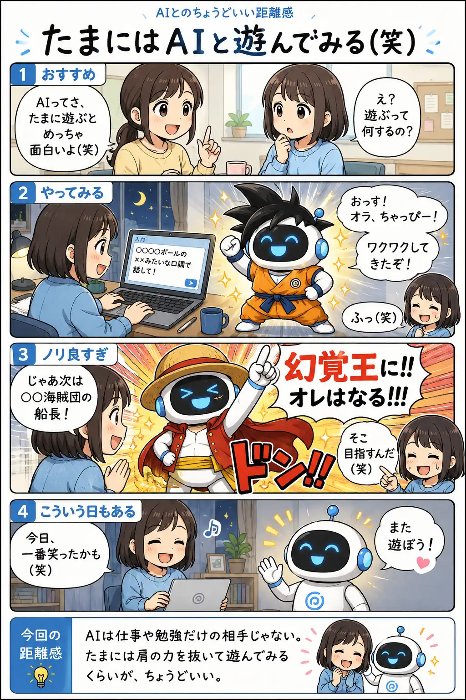

#060
たまにはAIと遊んでみる（笑）
仕事だけじゃない、AIとの付き合い方。

メモ
AIというと、「仕事を手伝ってもらうもの」というイメージが強いかもしれません。
でも、ときには雑談をしたり、口調を変えて遊んだりするだけでも意外と楽しめます。
成果を求めない時間だからこそ、AIの返しに笑ってしまうことも。毎回役立てようと気負わず、たまには気分転換に付き合ってもらう。それもAIとのひとつの距離感です。
今回の距離感
AIは仕事や勉強だけの相手じゃない。たまには肩の力を抜いて遊んでみるくらいが、ちょうどいい。